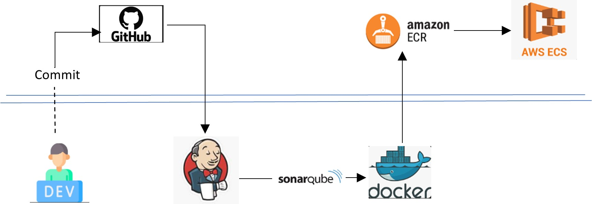
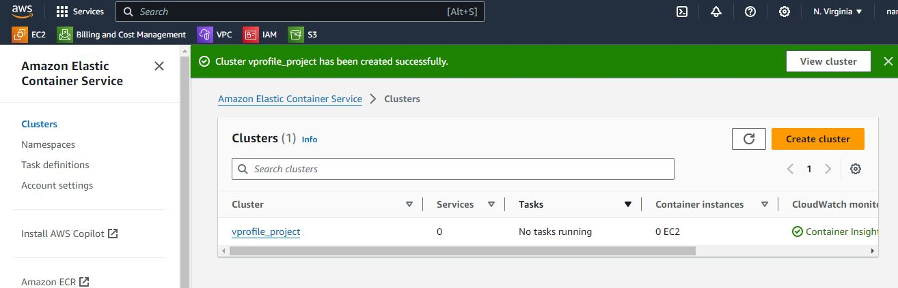
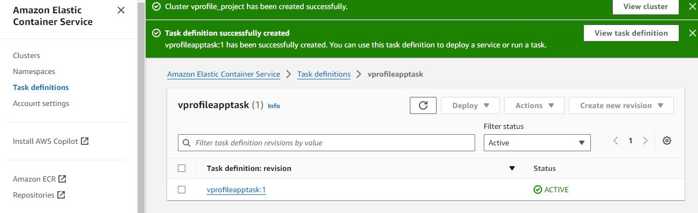
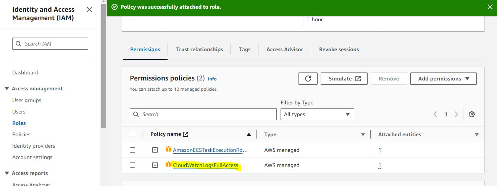
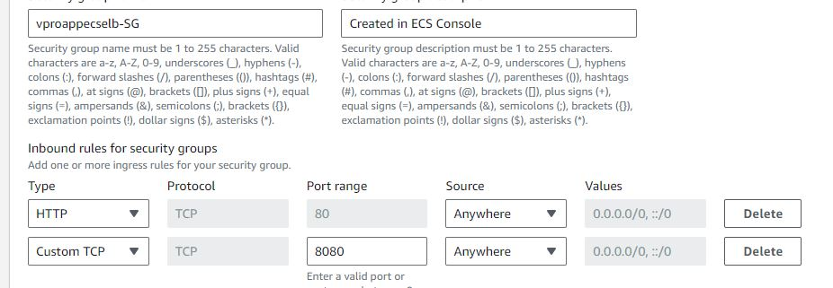
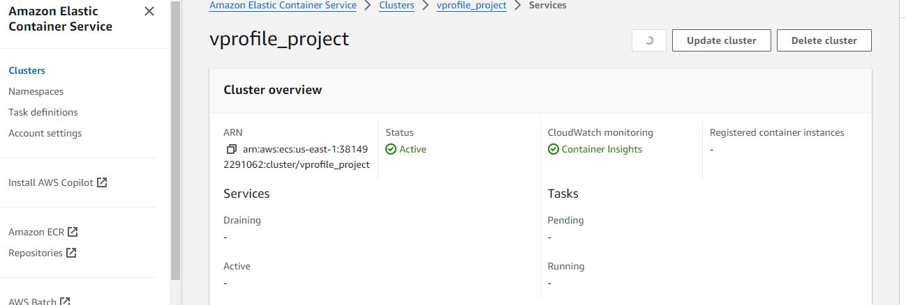
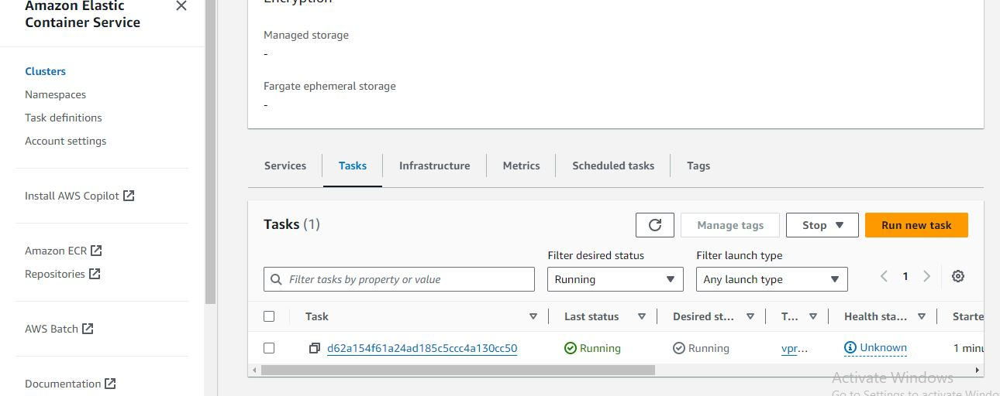
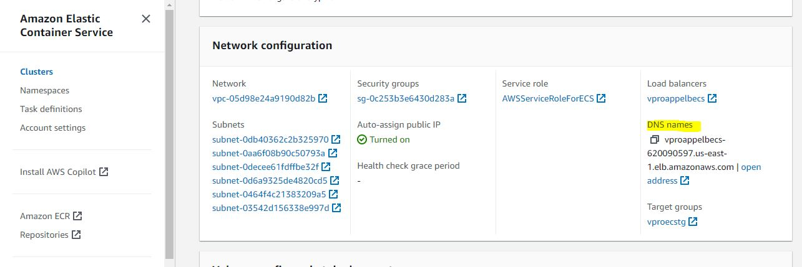

VProfile
Project Overview
When a developer pushes updated code to the Git master branch, the CI/CD pipeline automatically initiates the following processes: code checkout, compilation, testing, packaging, and containerization. The code undergoes testing with SonarQube, where a quality gate is configured with a bug threshold of 60. If the application does not pass this quality gate, the issue is flagged and communicated back to the developer. Once the application successfully passes all tests, it is containerized using Docker and pushed to Amazon ECR (Elastic Container Registry). From there, it is deployed to Amazon ECS (Elastic Container Service) for production use.
The company’s goal is to deliver product updates frequently to production automatically with high quality and reliability. They also aim to accelerate software delivery speed, enhance quality, and reduce feedback time between developers and testers.
Technologies Used
- Git - For version control for tracking changes in the code files
- Maven – For Continuous Build
- Jenkins - For continuous integration and continuous deployment
- Slack - Notification
- SonarQube - Configuration management tools
- ECR - for uploading docker image
- ECS - for deploying task/container
My Role

Create an EC2 instance with below properties
Jenkins t2.medium | 8Gb RAM | Ubuntu 22.04 LTS
SonarQube t2.medium | 8Gb RAM | Ubuntu 22.04 LTS
Setup Jenkins server
Install Java as a dependency
Visit www.jenkins.io to install Jenkins
sudo apt update
sudo apt install openjdk-17-jre -y
sudo wget -O /usr/share/keyrings/jenkins-keyring.asc \
https://pkg.jenkins.io/debian-stable/jenkins.io-2023.key
echo "deb [signed-by=/usr/share/keyrings/jenkins-keyring.asc]" \
https://pkg.jenkins.io/debian-stable binary/ | sudo tee \
/etc/apt/sources.list.d/jenkins.list > /dev/null
sudo apt-get update
sudo apt-get install jenkins -y

install git, maven & docker
sudo apt install git
sudo apt install maven -y
sudo apt install docker.io -y
sudo usermod -aG docker jenkins #restart Jenkins
Create IAM User
Create IAM user with below permission and then generate access key
- AmazonEC2ContainerRegistryFullAccess
- AmazonECS_FullAccess
Create ECR private repository
Navigate to AWS Management consol, search for "ECR". Click on create repository.
Create Jenkins Pipeline
Install below Jenkins plugins:
- Docker pipline
- Amazone ECR
- Amazone Web Service SDK :: ALL
Add aws credential on Jenkins
Dashboard --> Manage Jenkins --> Credentials --> System --> Global credentials (unrestricted)
Write Jenkins pipeline as shown below:
pipeline {
agent any
tools {
maven "MAVEN3"
}
environment {
registryCredential = 'ecr:us-east-1:aws_cred'
appRegistry = "381492291062.dkr.ecr.us-east-1.amazonaws.com/vprofile_docker"
vprofileRegistry = "https://381492291062.dkr.ecr.us-east-1.amazonaws.com"
}
stages {
stage('Fetch code'){
steps {
git branch: 'docker', url: 'https://github.com/devopshydclub/vprofile-project.git'
}
}
stage('Test'){
steps {
sh 'mvn test'
}
}
stage ('CODE ANALYSIS WITH CHECKSTYLE'){
steps {
sh 'mvn checkstyle:checkstyle'
}
post {
success {
echo 'Generated Analysis Result'
}
}
}
stage('Build App Image') {
steps {
script {
dockerImage = docker.build( appRegistry + ":$BUILD_NUMBER", "./Docker-files/app/multistage/")
}
}
}
stage('Upload App Image') {
steps{
script {
docker.withRegistry( vprofileRegistry, registryCredential ) {
dockerImage.push("$BUILD_NUMBER")
dockerImage.push('latest')
}
}
}
}
}
}
Create ECS Cluster, task definition and ECS service
Creat cluster:
- Cluster name: vprofile_project
- Monitoring – optional: Use container insights (ECS – cloudwatch)

Task definition: make the below changes
- name: vprofileapptask
- memmory 2GB
- Container – 1
- Name: vproapp
- Name: vproapp
- port 8080 (tomcat)
- tag: Name vprofileapptask

Create a Role with "CloudwatchLogsfullaccess" previllags:
task defention --> Task execution role --> ecsTaskExecutionRole --> add permission --> attach policies --> CloudwatchLogsfullaccess

Create Service
- Application type: Service(tomcat running on background)
- family – vprofileapptask
- service name: vprofileappsvc
- service name: vprofileappsvc
- Deployment failiure detection – uncheck
- Networking
- Create a new security group
- http:80 0.0.0.0/0, ::0
- custom port:8080 0.0.0.0/0, ::0
- Load Balancer
- type: application load Balancer
- name: vproappelbecs
- container to LB 8080 : 8080
- listner 80
- target group name: vproecstg
- helthcheck: /login (vprofile app is available in this path)



It will take 5 to 10mins to deploy the task
Cluster --> Tasks
To check Logs : Cluster --> Logs
To get the DNS endpoint: Amazon Elastic Container Service --> Clusters --> vprofile_project --> Services --> vprofileappsvc --> Configuration

Write pipeline script to deploy image on ECS
environment {
registryCredential = 'ecr:us-east-2:awscreds'
appRegistry = "951401132355.dkr.ecr.us-east-2.amazonaws.com/vprofileappimg"
vprofileRegistry = "https://951401132355.dkr.ecr.us-east-2.amazonaws.com"
cluster = "vprofile"
service = "vprofileappsvc"
}
stage('Deploy to ecs') {
steps {
withAWS(credentials: 'awscreds', region: 'us-east-2') {
sh 'aws ecs update-service --cluster ${cluster} --service ${service} --force-new-deployment'
}
}
}